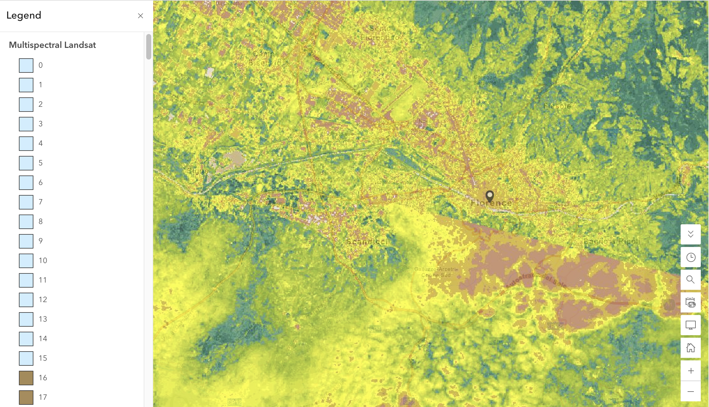

Week 05 · Octorber 2026
Florence: Water
The question
How does water flow through Florence, and how do natural watershed boundaries relate to the city's water supply system?
The data
I used Global Watersheds with MERIT-Hydro (2021) and HydroSHEDS (2013) to delineate the catchment around Palazzo Vecchio in Florence (43.769° N, 11.256° E). For water stress, I used WRI's Aqueduct 4.0 Water Risk dataset through ArcGIS Online. It uses a 1979–2019 baseline, with data from April 2023, and is licensed under CC BY 4.0. Water stress represents the ratio of water withdrawals to available renewable supply at the sub-basin scale.
The method
I used NDVI Raw to read index values and NDVI Colorized to visualize their spatial pattern. I compared three green places that I had ranked before checking the data, first at a broader Florence and peri-urban scale and then at more local urban sites. I also used the Index Mask tool with 0.5 as the threshold for “green,” then tested 0.4 and 0.6 to see whether changing the threshold could separate ecological habitat from managed green surfaces.

What I found
I expected the suburban agricultural and cultivated area near Fiesole to have the highest NDVI and estimated about 0.65; its actual value was 0.752. I originally ranked Piazzale Michelangelo second and the Garden of Pitti Palace third. In the actual data, the Pitti Palace garden was 0.569 and vegetation around Piazzale Michelangelo was 0.566. The paved plaza itself was only 0.122, showing how results change when looking more locally. A high-index but low-habitat example was Stadio Artemio Franchi, with an NDVI of 0.627. Its highly managed sports turf produced a strong vegetation signal despite having much less structural ecological diversity than more complex habitat.
What this does not show
I am using NDVI to stand for the ecological value of green space, and it might fail because highly managed surfaces such as football turf can receive high NDVI values even though they do not provide the same habitat structure as more complex vegetation. The Arno River had an NDVI of -0.114, showing that ecologically meaningful environments can also appear “non-green.” Changing the threshold does not solve this problem because the limitation comes from what NDVI measures, not only where the cutoff is set.
AI use: I used ChatGPT to help me understand the Tutorial 3 instructions, navigate ArcGIS Map Viewer and Landsat Explorer, and refine the wording of my journal entry. I verified the final content using my own NDVI measurements, screenshots, and the tutorial document.